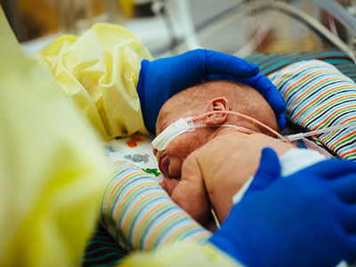

<!DOCTYPE html>
<html lang="en">
<head>
    <meta charset="UTF-8">
    <meta name="viewport" content="width=device-width, initial-scale=1.0">
    <title>clinique</title>
    <link rel="stylesheet" href="style.css">
</head>
<header>
    <h1> <u>CLINIQUE   EL   WAFAE </u> </h1> 
    <h1>specialite :L'accouchement prématuré</h1>
</header>
<nav>
    <a href="#1">INTRODUCTION</a> 
    <a href="#2">GENERALITES</a>
    <a href="#3">ETHIOPATHOGENIE</a>
    <a href="#4">DIAGNOSTIC</a>
    <span class="sign-up">
    <a href="#form">rendez-vous</a>
    </span>
</nav> <br>
<body>
    
    <div id="1"><h4>Introduction</h4>
    <p id="intro">L'accouchement prématuré représente un défi 
        majeur de santé publique à l'échelle mondiale, avec 
        des millions de bébés nés prématurément chaque 
        année. Les causes de cette condition sont variées, 
        allant des facteurs biologiques aux facteurs socioéconomiques. Les conséquences de l'accouchement 
        prématuré peuvent être graves pour le bébé et sa 
        famille, notamment des complications médicales et 
        des défis émotionnels, financiers et sociaux. 
        Les efforts de recherche et de santé publique visent à 
        prévenir et à traiter l'accouchement prématuré, ainsi 
        qu'à améliorer les soins néonatals. Cette étude 
        examine en profondeur les causes, les facteurs de 
        risque, les conséquences et les stratégies de 
        prévention de l'accouchement prématuré, dans le 
        but d'améliorer les soins et les résultats pour les 
        bébés prématurés et leurs familles.</p></div> <br>
        <div id="2"><h4>GENERALITES :</h4>
            <h5>Définition AP :</h5>
            <p>Selon l’OMS, on appelle accouchement prématuré toute 
                naissance survenant entre la 22ème et la 37ème semaine 
                d’aménorrhée (SA) révolue, soit avant 259 jours d’aménorrhée 
                d’un enfant de plus de 500 grammes.</p>
                <h5>Intérêt :</h5>
                <p>•La fréquence : l’AP est fréquent, 1femme sur 5 sera 
                    hospitalisée pendant sa grosse pour menace d’accouchement 
                    prématuré (MAP). Parmi ces femmes 1/3 accouchera avant 37 
                    SA. La prématurité est donc un problème important de santé 
                    publique. Au Mali, sa fréquence est de 9,1ù au CHU Gabriel 
                    Touré. 
                    •La gravité : la prématurité est grave : elle est responsable à elle 
                    seule de 70% de la mortalité et de la morbidité néonatale, 
                    responsable de la moitié des séquelles neurologiques observées 
                    chez des nouveau-nés accouchés avant 30 SA.
                    •La diversité étiologique : les étiologies sont nombreuses.
                    •La prise en charge : la prise en charge du nouveau- né 
                    prématuré est difficile et couteuse</p>  
                    <h5>Rappel :</h5>
                    <p>➢ Le travail d’accouchement comprend trois périodes ou stades 
                        - Première période : effacement et dilatation du col. Elle comprend 2 
                        phases, la phase de latence et la phase active. 
                        o La phase de latence : elle précède la phase active du travail. Pendant 
                        la phase de latence, le col se modifie (raccourcissement et début de la 
                        dilatation jusqu’ à 4 cm). C’est au terme de cette phase de latence que 
                        débute le travail proprement dit
                        o La phase active : elle commence à la fin de la phase de latence et se 
                        poursuit jusqu’à la dilatation cervicale complète
                        - Deuxième période Elle comprend 3 étapes successives : 
                        l’engagement de la présentation, sa descente et sa rotation et, pour 
                        finir, son dégagement et expulsion du fœtus. 
                        - Troisième période : la délivrance 
                        Elle évolue en 3phases, le décollement et l’expulsion du placenta et 
                        l’hémostase assurée par la rétraction utérine. 
                        Effets de la contraction utérine : ces effets sont :
                        • Formation de la poche des eaux
                        • Effacement et dilatation du col de l’utérus
                        • Progression du mobile fœtal
                        • Hémostase (globe utérin) </p></div> 
        <br><div id="3"> <h4>ETHIOPATHOGENIE </h4>
        <h5>Causes maternelles </h5> <p>- Toute malformation utérine congénitale (hypoplasie, utérus cloisonné, 
            uni- ou bicorne) ou acquise (synéchie, utérus cicatriciel, fibrome
            - La béance cervico-isthmique constitue une incapacité (incompétence) 
            du col et de l’isthme utérin à se maintenir fermés ; elle est congénitale 
            ou acquise 
            - Syndrome vasculo-renaux (prééclempsie, éclampsie, Hématome 
            retroplacentaire) 
            - Diabète 
            - L’infection est certainement la principale cause des menaces 
            d’accouchements prématurés. Elle peut être d’origine virale (hépatite 
            virale, cytomégalovirus...), bactérienne (E. coli, streptocoque B), ou 
            parasitologique (paludisme en zone d’endémie).
            - L’hyperthermie peut, à elle seule, être responsable de l’apparition de 
            contractions utérines. L’infection urinaire doit être systématiquement 
            recherchée. Elle est en effet extrêmement fréquente pendant la 
            grossesse et est le plus souvent asymptomatique. De même, il faut savoir 
            suspecter une listériose devant un syndrome grippal. La présence de 
            Gardnerella vaginalis et (ou) de germes anaérobies au niveau vaginal 
            (vaginose) pourrait être associée à un excès de prématurit</p>
            <h5>Causes ovulaires :</h5><p>12
        
                -Les causes annexielles 
                o Elles sont représentées par le placenta prævia (responsable d’une 
                irritation du segment cervico-isthmique)
                o l’hydramnios (excès de liquide amniotique entraînant une 
                surdistension utérine) 
                o l’infection ovulaire (chorio-amniotite)
                o La rupture prématurée des membranes
                -causes fœtales
                o Les grossesses multiples (jumeaux, triplés...) sont responsables 
                d’environ 20 % de la prématurité. 
                o Les malformations fœtales ou une autre pathologie fœtale peuvent 
                être responsables d’une menace d’accouchement prématuré, 
                principalement par surdistension utérine ou secondairement aux 
                gestes invasifs qui peuvent être réalisés.
                Près de 40% des accouchements prématurés restent inexpliqué.
                -D’après ces données, un coefficient de risque d’accouchement 
                prématuré (CRAP) a été établie par Papernick. Il évalue pour chaque 
                femme le danger d’avoir une interruption prématurée de sa grossesse. 
                CRAP (voir annexe 1) 
                - Si le CRAP est inferieur à 5 : il n’a pas de danger de prématurité - Si 
                le CRAP est compris entre 5 et 10, il y a un danger potentiel.
                -Si le CRAP est supérieur à 10, le risque est certain.</p>
        </div> <br><div id="4"> <h4>DIAGNOSTIC</h4>
                <p>➢ Dans le diagnostic de l'accouchement prématuré, plusieurs aspects 
                    doivent être pris en compte, notamment le diagnostic positif, le 
                    diagnostic étiologique et le diagnostic différentiel.</p><br>
                    <h5>-Diagnostic positif</h5><p>o Le diagnostic positif de l'accouchement prématuré repose 
                        généralement sur l'évaluation clinique des symptômes de travail 
                        prématuré, tels que des contractions utérines régulières et 
                        douloureuses, des modifications du col de l'utérus, la rupture 
                        prématurée des membranes et d'autres signes de travail actif chez 
                        une femme enceinte avant 37 semaines de gestation</p>
                    <h5>-Diagnostic étiologique</h5> <p> Le diagnostic étiologique vise à identifier les causes sousjacentes de l'accouchement prématuré. Cela peut inclure 
                        une évaluation approfondie des antécédents médicaux de la 
                        mère, des facteurs de risque obstétricaux, des tests de 
                        dépistage des infections, des examens de l'échographie et 
                        d'autres investigations pour déterminer la cause spécifique 
                        de l'accouchement prématuré.</p>
                    <h5>-Diagnostic différentiel
                    </h5><p>o Le diagnostic différentiel consiste à exclure d'autres causes 
                        possibles de symptômes similaires à ceux de l'accouchement 
                        prématuré, telles que les faux travaux, les douleurs 
                        ligamentaires, les infections urinaires, les troubles gastrointestinaux et d'autres conditions médicales qui peuvent 
                        présenter des symptômes similaires.</p></div><br>
                        
<div id="form">
    <h6>rendez-vous</h6><br>
    <label for="">nom et prenom (mere)</label><input type="text" placeholder="entre votre nom" id="nom"><br>
    <label for="">age</label><input type="text" placeholder="votre age actuelle"id="age"><br>
    <label for="">adress</label><input type="textaera"placeholder="votre adress"id="adress"><br>
    <label for="">date </label><input type="date"id="date"><br>
    <label for="">tel</label><input type="tel"id="tel" placeholder="06-09-00-00-00"><br>
    <button id="ajouter">ajouter</button>
</div>
<div id="tb"><table id="appointments-table">
    <thead>
        <tr>
            <th>Nom</th>
            <th>Âge</th>
            <th>Adresse</th>
            <th>Date</th>
            <th>Téléphone</th>
            <th>Actions</th>
        </tr>
    </thead>
    <tbody>
    </tbody>
</table>
</body>
</div>

<script src="crud.js"></script>
</html>